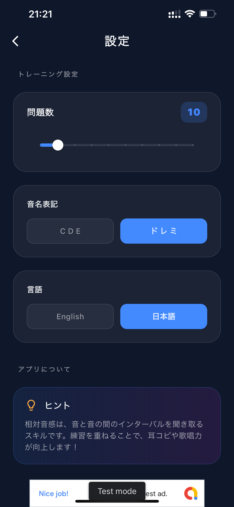
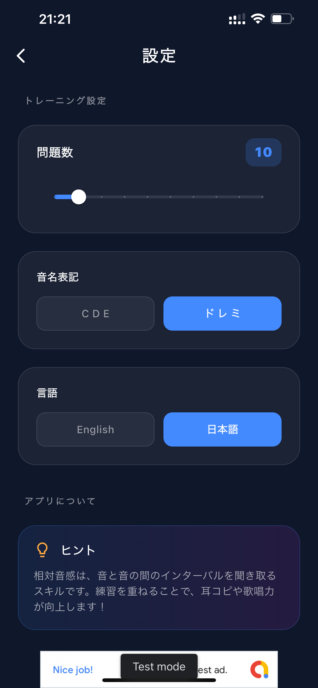

Master Your Fretboard.
Elevate Your Play.
リアルなベース音源で相対音感を鍛える。ウォーキング・ベース・トレーニング機能を搭載した、ベーシストのための聴音アプリ。


 

Powerful Tools for Your Ears
ベーシストに必要な全ての機能をこの一つに。
Realistic Bass Samples
リアルな4弦ベース音源（E1〜G3）を使用。実際の楽器を想定した最適な音域で、プロの耳を養います。
Precision Fretboard UI
ベースの指板を忠実に再現したインターフェース。音を聴くだけでなく、実際の運指と直結したトレーニングが可能です。
Scale & Chord Reference
メジャー/マイナースケールや各種コード（7th, m7b5等）の形を指板上で確認。ルートからの度数（1, 3, 5...）表示で音楽理論の理解も深まります。
Adaptive Difficulty
初心者向けの単音当てから、中〜上級者向けの連続聴音まで。自分のレベルに合わせてステップアップ。
Progress Tracking
日々のトレーニング実績をカレンダーで管理。自分の成長を視覚化し、モチベーションを維持できます。
Global Ready
CDE表記、ドレミ表記の両方に対応。日本語・英語・ベトナム語のマルチランゲージ・サポート。
Ad-Free Focus
トレーニングに集中できるよう、洗練されたデザイン。無料ですべての機能を利用可能。
Master Walking Bass Lines
ジャズやブルースのラインを耳で覚え、指を動かす。コード進行に基づいた実践的なウォーキング・ベース・モードを搭載。
- 12小節ブルース進行に基づいた実践ワーク
- Major / Minor / Dominant 7th 各種スタイル対応
- リアルタイムなコード・ディグリー（I, IV, V）表示
- クロマチック・アプローチを含む音楽的なライン生成
Jazz & Blues
Practice over real progressions.
Unlock Your Musical Potential
相対音感は、より良いアンサンブルとソロプレイの鍵です。